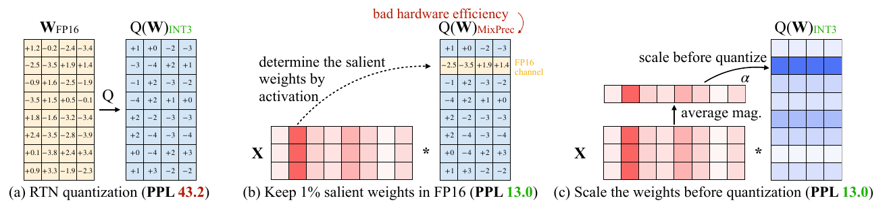
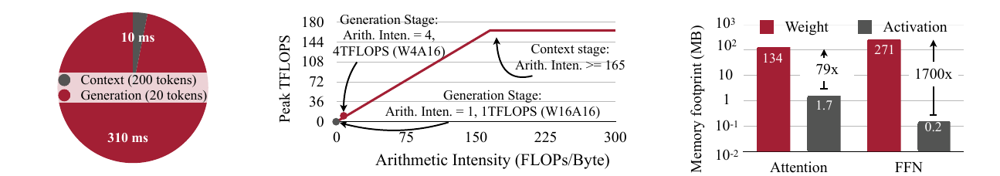
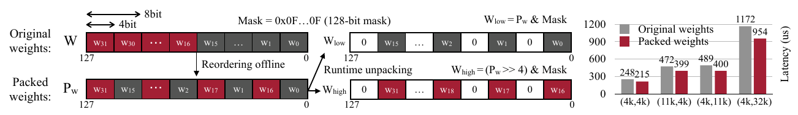
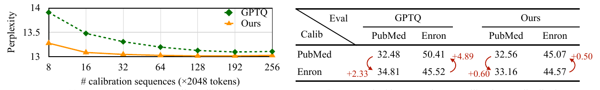
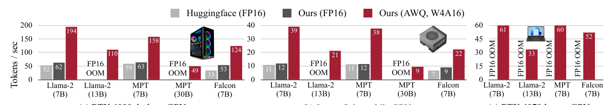

本文精读 Lin 等人的 AWQ: Activation-aware Weight Quantization for On-Device LLM Compression and Acceleration。阅读依据是 arXiv v6 英文原文（2026 年 4 月修订；论文发表于 MLSys 2024）及带批注的中英对照 PDF。对照 PDF 中的译文歧义以英文原文核对：AWQ 根据激活分布判断哪些权重通道值得保护。下文依次解释量化目标、缩放的等效关系与误差条件、离线搜索、TinyChat 的运行时实现和论文证据。读者需要了解线性层矩阵乘法及自回归生成中的提示处理与逐 token 生成。除明确标为“本地单点核验”的结果外，数字均来自论文。
主要工作
激活感知权重量化（Activation-aware Weight Quantization，AWQ）是一种训练后、低比特、仅量化权重的方法。它在少量校准输入上统计每个输入通道的激活幅度，借此判断该通道对应的权重在量化后对输出的影响。论文先用“保留少量重要权重为 FP16”的实验揭示这种影响，再用量化前放大相应权重列、同时反向缩小输入通道的等效变换保护它们。实际 AWQ 仍可把整层权重统一存为 INT3 或 INT4，不需要为少数通道单独保存 FP16 权重。论文，§1、§3.1–3.2，图 2
作者还实现了 TinyChat：在推理时读取压缩权重、在矩阵计算中即时反量化，并配合权重打包与算子融合，把低比特存储带来的带宽收益转为实际速度。论文报告，在其批量为 1 的设备端测试中，TinyChat 的 4 比特 AWQ 模型相对 Hugging Face FP16 实现，在桌面及移动 GPU 上平均快约 3.2–3.3 倍。这个系统数字同时受量化、内核和基线实现影响；算法精度要由独立的困惑度等实验判断。论文，§1、§4、§5.4，图 9
研究背景
线性层将输入特征 X 与权重 W 相乘。FP16 权重每个元素占 16 bit；若权重改用 4 bit 表示，仅就原始权重位数而言可降为四分之一，但分组尺度、零点与其他模型状态仍占空间。W4A16 表示权重采用 4 bit 存储、激活保留 16 bit；这与同时将权重和激活量化为 8 bit 的 W8A8 是两种执行条件。W4A16 需要在浮点计算中处理低比特权重与 FP16 激活，因此算子实现更困难。论文在这里提到 W8A8，是为了比较存储精度与计算精度一致时的工程路径，而非把它作为 AWQ 精度表的直接基线。论文，§2、§4
训练后量化（post-training quantization，PTQ）在模型训练完后确定整数表示；舍入到最近值（round-to-nearest，RTN）是直接按量化尺度舍入权重的基线。分组量化把一个输出通道上的连续若干权重归为一组，让组内共享量化参数；论文常用的 INT3-g128 是 3 bit 权重、每组 128 个权重。GPTQ 是另一种 PTQ 方法，通过量化过程中的误差补偿改善结果。AWQ 的搜索不更新原权重，也不通过反向传播训练模型；它选择预量化缩放，并可进一步搜索权重裁剪阈值。论文，§2、§3.2、§5.1
模型精度主要用 WikiText-2 的困惑度（perplexity，PPL）比较：它是平均下一个 token 负对数似然的指数，同一测试集、分词与评估口径下越低越好。PPL 衡量预测分布，并不等于问答正确率或生成质量。端侧推理还关心逐 token 生成速度，因为小批量解码每一步都要重新读取大量权重；减少权重读取字节数才有机会降低延迟。论文，§4.1、§5.1
问题定义
设 W ∈ R^{m×n}、X ∈ R^{n×t}，则输出 Y=WX。输入通道 j 是 X 的第 j 行，对应 W 的第 j 列；该列的权重作用于同一个输入特征。若量化使权重 w_ij 变为 w_ij+e_ij，那么单个输出位置的误差为 δy_i=Σ_j e_ij x_j。因此，权重误差 e_ij 的影响还取决于它所乘的激活 x_j：即使权重本身不大，若相应激活幅度大，其量化误差仍可能明显改变输出。这是论文利用激活统计选择重要权重通道的直接动机，通道“重要”仍需由实验验证。论文，§1、§3.1–3.2
论文表 1 用同样的 INT3-g128 设置对比三种“保留 1% 通道为 FP16”的选法。以 OPT-1.3B 为例，WikiText-2 PPL 从 RTN 的 119.00 降到按激活选取时的 16.91；按权重幅度选取为 98.55，随机选取为 109.38。OPT-6.7B 上对应值为 23.54、11.39、22.37、24.23。这里的 1% 指被选中的输入通道比例：整列权重受到保护，所以在该层也约对应 1% 的权重。实验说明选择依据来自输入激活，保护对象仍是权重；只看权重幅度在这些设置下没有得到相同收益。论文，表 1


图 2 左侧把所有权重直接舍入为 INT3，重要输入通道对应的权重也一起受误差影响。中间的红色激活列标出“依据”：保留对应权重列为 FP16 后，图示 PPL 降低，但计算要同时处理整数权重与散落的 FP16 权重，增加存储布局及内核复杂度。右侧仍把整层量化为 INT3，先调整不同列的尺度，使重要列在量化格点上得到更有利的表示。AWQ 要解决的正是不引入混合精度通道时怎样接近其精度收益。论文，图 2、§3.1
方法原理
按列缩放的等效变换
为每个输入通道选一个正缩放因子 s_j，组成对角矩阵 D=diag(s)。右乘 WD 会把 W 的第 j 列整体乘以 s_j；左乘 D⁻¹X 则把 X 的第 j 行除以同一个 s_j。在尚未量化的数学运算中，两步严格抵消：
Q 是权重的分组量化和反量化操作。由于舍入、量化尺度及可能的裁剪会随输入权重改变，通常有 Q(WD) ≠ Q(W)D，所以先缩放再量化能改变误差，即使原始线性层函数没有变化。推理时，D⁻¹ 可折入前一算子或前一层的参数，避免每次单独执行一次按通道除法；具体折叠方式取决于相邻算子的结构。论文，§3.2，式 (4)
缩放收益的条件与算例
论文式 (1)–(3) 用一个简化的对称均匀量化组解释误差。设原量化步长为 Δ、缩放后步长为 Δ′，r(z)=Round(z)−z 是舍入残差。对某个权重 w 及输入 x，缩放前后的输出误差分别可写为：
若两次舍入残差的典型幅度相近，且放大这一列没有明显改变组内步长，即 Δ′≈Δ，则典型误差幅度的比值约为 (Δ′/Δ)/s≈1/s。这不是每个元素的严格误差上界，也不是任意 s>1 都能提高模型精度的证明。缩放太大时，组内最大值、尺度或裁剪情况可能变化；别的列也会使用改变后的组尺度，因而会受损。论文，§3.2，式 (1)–(3)、表 2
一个解释性构造可以看到这一步：假设某组步长由其他权重固定在 0.1，某通道有 w=0.26、x=8。原乘积是 2.08，直接舍入得到 Q(w)=0.3，乘积变成 2.4，误差为 0.32。取 s=2 后，等效输入为 x′=4、待量化权重为 w′=0.52，原乘积仍是 2.08；若步长保持 0.1，Q(w′)=0.5 给出 2.0，误差绝对值降为 0.08。这些数只说明固定步长条件下的作用；真实分组量化会重算尺度，不能把这个构造当作论文实测。论文，§3.2
论文表 2 给出了这个权衡的实证：OPT-6.7B 的 INT3-g128 设置下，给 1% 显著通道乘 s=1、1.25、1.5、2、4，PPL 依次为 23.54、12.87、12.48、11.92、12.36。到 s=4 时，被改变的组尺度比例升至 21.2%，全模型 PPL 反而比 s=2 差。由此，方法需要同时考虑显著列的保护和其他列的误差。论文，表 2
激活统计与缩放搜索
论文把校准输入记为 X，以量化输出和原始输出之间的差作为搜索目标：
s_X,j 是校准样本上第 j 个输入通道的平均绝对激活。α=0 对应不按激活幅度缩放；较大的 α 更强调幅度大的通道。论文在 [0,1] 上网格搜索 α，用量化前后的层输出差判断候选，而不是对语言模型重新训练；实验设置给出 20 个网格候选。每层找到尺度后再搜索权重裁剪阈值，以降低量化权重的均方误差。校准集来自 Pile 的少量预训练文本。激活统计决定搜索方向，层输出差则衡量所有通道综合后的效果。论文，§3.2，式 (4)–(5)、§5.1
这一过程说明 AWQ 为什么不等同于“将 1% 权重留为 FP16”：表 1 的混合精度只是验证重要通道存在的实验；最终缩放系数作用于输入通道，量化时整层仍采用同一低比特格式。搜索也不保证任意校准分布都合适；它依赖样本中的激活幅度能代表部署时遇到的特征。论文，§3.1–3.2、§5.3
TinyChat 的运行时映射


图 3 左侧在 Llama-2-7B、RTX 4090、批量 1 的示例中，处理 200 个提示 token 用约 10 ms，而生成 20 个 token 用约 310 ms；两段 token 数不同，图用来展示逐 token 生成阶段的实际耗时瓶颈，不能据此直接比较单个 token 的算法复杂度。中图以论文采用的约 165 TFLOPS 算力与 1 TB/s 带宽构成屋顶线：FP16 生成阶段算术强度约 1 FLOP/Byte，低于计算受限阈值约 165 FLOP/Byte。右图中，注意力权重访问约 134 MB、激活约 1.7 MB；前馈网络权重约 271 MB、激活约 0.2 MB。这组特定模型的访问量说明为什么压缩权重有机会减少小批量生成的内存流量。论文，§4.1、图 3
但 W4A16 不能只改文件位宽。TinyChat 将 4 bit 权重按设备布局打包，在矩阵乘法内核中读入并即时反量化为计算所需的浮点值，直接参加乘加，不把完整的反量化权重中间张量写回显存。它还融合 QKV 投影、层归一化及部分注意力相关操作，减少中间读写与内核启动；因此图 9 的速度收益不能单独归给 AWQ 缩放算法。论文，§4.2


图 4 以 128 bit ARM NEON 寄存器为例。原始顺序为 w0,w1,…,w31 时，32 个 4 bit 值虽能装进一个寄存器，逐个拆到 8 bit 计算位却不便；离线重排为 w0,w16,w1,w17,…,w15,w31 后，每个字节的低 4 bit 恰好组成前 16 个值，高 4 bit 组成后 16 个值。图中的 Mask、右移和按位与分别提取两半，令 SIMD 指令一次处理多个权重。右侧四组矩阵乘法内核延迟由原打包的 248、472、489、1172 μs 降至 215、399、400、954 μs；这是ARM 权重布局的局部比较，并非完整模型 3 倍加速的单独来源。论文，§4.2、图 4
实验与证据
语言模型量化精度
论文表 3 比较了 OPT 系列在 INT3-g128 下的 WikiText-2 PPL。下表摘出三种规模；“1% FP16”是混合精度对照，“AWQ”仍把权重统一量化为 INT3。论文，表 3
| 模型与指标 | FP16 | RTN INT3-g128 | 1% FP16 对照 | AWQ INT3-g128 |
|---|---|---|---|---|
| OPT-1.3B，WikiText-2 PPL ↓ | 14.62 | 119.47 | 16.91 | 16.32 |
| OPT-6.7B，WikiText-2 PPL ↓ | 10.86 | 23.54 | 11.39 | 11.39 |
| OPT-13B，WikiText-2 PPL ↓ | 10.13 | 46.04 | 10.43 | 10.56 |
在 OPT-1.3B 上，AWQ 把 RTN 的 119.47 降至 16.32；在 OPT-6.7B 上与保留 1% FP16 的对照同为 11.39。OPT-13B 上混合精度对照为 10.43，AWQ 为 10.56，显示“接近”并非每项都更好。论文表 1 把 OPT-1.3B 的 RTN 写为 119.00，而表 3 为 119.47；本文按所在表分别引用，不把两表数字混作同一次测量。论文，表 1、表 3
表 4 将方法扩展到 LLaMA 与 Llama-2 的 INT3/INT4。以 Llama-2-7B、WikiText-2 PPL 为例：FP16 为 5.47，INT4-g128 的 RTN、GPTQ、AWQ 分别为 5.73、5.69、5.60；INT3-g128 分别为 6.66、6.43、6.24。这些比较控制了模型与比特数，支持 AWQ 在该表中对 RTN、GPTQ 的精度优势；数字本身不证明推理速度。论文另用 Vicuna、OpenFlamingo、VILA 及代码、数学任务检查适用范围，但评估协议与指标不同，不能把所有结果压成同一个 PPL 增益。论文，表 4–8、§5.2
校准数据与分布变化


图 8 左侧横轴是每条 2048 token 的校准序列数量，纵轴是 PPL；橙线 AWQ 在 16 条序列时已接近其更多数据下的水平，绿色 GPTQ 需要更多序列才能接近同一范围。右侧固定 OPT-6.7B、INT3-g128，分别以 PubMed 摘要和 Enron 邮件校准，并在两个领域评估。PubMed 校准、Enron 评估时，AWQ 从同域的 44.57 增到 45.07（+0.50），GPTQ 从 45.52 增到 50.41（+4.89）；反方向 AWQ 增加 0.60，GPTQ 增加 2.33。两种方法都以同域校准较好，但该实验中 AWQ 对分布变化更稳健。这是所测两个领域与该模型的结果，不能推成对任何未见任务都不会过拟合。论文，§5.3、图 8
设备端运行速度


论文按批量 1、4 token 提示、连续生成 200 token 的协议测试，并报告多次运行的中位延迟。图 9 中，RTX 4090 上 Llama-2-7B 的 Hugging Face FP16、TinyChat FP16 与 TinyChat W4A16 分别为 52、62、194 token/s；同一设备同一模型下，相对 Hugging Face 的总收益约 3.73 倍，相对 TinyChat 自身 FP16 基线约 3.13 倍。Jetson Orin 上对应为 11、12、39 token/s。后一个比较更接近隔离低比特路径的贡献，但仍包含量化内核与运行时的所有差异。图中 OOM 的格子说明某些 FP16 基线在给定显存下不能运行，不能把 OOM 当作一个可计算的速度比值。论文，§5.4、图 9
本地单点核验
另用本机 RTX 5070 对官方代码中的 OPT-1.3B 做了一次精度核验：模型相同、WikiText-2 测试口径相同，AWQ 搜索使用 Pile 校准文本；RTN 与 AWQ 都采用 INT3-g128 的 fake quantization，即舍入后仍用浮点张量模拟计算。实际日志给出的 PPL 为 FP16 14.62、RTN 119.46、AWQ 16.27，接近论文表 3 的 14.62、119.47、16.32。这支持这一模型和测试集上的精度对比；fake quantization 不产生真实的 3 bit 权重占用，不能验证 TinyChat 加速或实际 INT3 显存节省。本地 CUDA INT4 扩展另有数值偏差待排查，因此这里也不报告 INT4 内核性能。论文，表 3
局限性
AWQ 的缩放收益取决于激活统计、分组尺度和其他通道的损失。式 (3) 的 Δ′≈Δ 只是便于解释的条件；当缩放改变组的最大值或裁剪范围时，重要通道可能受益而其他通道受损。离线搜索通过层输出差和裁剪选择折中，因此实际精度要在目标模型、位宽、分组与任务上测量。论文，§3.2、表 2
低比特权重的理论 4 倍位数压缩也不会自动成为 4 倍吞吐。若内核解包、反量化、启动、KV 缓存访问或别的算子占主导，端到端速度可能不同；图 3 的屋顶线分析只针对其设备及小批量生成场景。图 9 的 Hugging Face FP16、TinyChat FP16 和 AWQ W4A16 三根柱必须同时看，才能分别估计运行时优化与低比特路径的影响。论文，§4.1–4.2、§5.4
结论
AWQ 把“重要权重”的判断从权重幅度转到对应输入通道的激活幅度。在 WD·D⁻¹X=WX 的等效关系下，它调节量化前的权重列尺度，再以量化输出误差选取折中，使整层保持统一低比特格式。论文的混合精度对照、缩放消融及多模型 PPL 结果支持这一精度机制；TinyChat 的即时反量化、权重打包与算子融合则提供设备端加速所需的实现。读这篇论文时，区分算法的量化精度、权重存储的理论压缩和特定运行时的实测吞吐，才能正确解释每张表与每幅图的结论。论文，§3–5